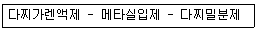

식물보호기사 (2007-03-04 기출문제)
1과목: 식물병리학
1. 오이 노균병균은 어떤 종류의 포자를 형성 하는가?
- 동포자
- 하포자
- 자낭포자
- 유주(포)자
(정답률: 69%)

2. 산성토양에서 더 많이 발생하는 병은 ?
- 감자더뎅이병
- 밀 마름병(Take-all)
- 배추 무사마귀병
- 목화 뿌리썩음병(Verticillium wilt)
(정답률: 83%)
3. 식물병의 병징 중 비대병징은?
- 감자 더뎅이병
- 사과나무 부란병
- 복숭아나무 세균성구멍병
- 장미 근두암종병
(정답률: 63%)
4. 고추 열매에 검은색의 작은 알갱이들이 동심윤문을 그리며 만들어지고, 습도가 높을 때 그 위에 분홍색 계통의 점액이 분비되는 병은?
- 역병
- 탄저병
- 더뎅이병
- 깨씨무늬병
(정답률: 59%)
5. 벼 흰잎마름병 방제에 대한 설명 중 틀린 것은?
- mancozeb계통의 살균제를 처리한다.
- 질소질 비료의 다용을 피한다.
- 월동 잡초 및 피해를 입은 개체는 제거한다.
- 침수 되지 않도록 한다.
(정답률: 64%)
6. 보리 겉깜부기병균이 기주식물로 침입하는 주요 부위는?
- 뿌리
- 줄기
- 잎
- 꽃
(정답률: 38%)
7. 유전자대 유전자설(gene for gene theory)을 제창한 학자는?
- Flor
- De Bary
- Smith
- Millardet
(정답률: 35%)
8. 다음 중 주로 풍매전반을 하는 병은?
- 배추 무사마귀병
- 배나무 붉은별무늬병
- 오이 모자이크바이러스
- 식물의 모잘록병
(정답률: 59%)
9. 다음 중 항바이러스성 물질로 병든 식물체에 살포하거나 주입하면 병징이 억제되는 것은?
- ribavirin
- thiram
- vinclozolin
- benomyl
(정답률: 46%)
10. 진균의 특징이 아닌 것은?
- 세포내 핵이 있다.
- 영양체는 주로 균사이다.
- 번식체는 주로 포자이다.
- 세포벽은 키틴을 갖지 않는다.
(정답률: 66%)
11. 병원균이 점질물에 싸여있기 때문에 수매 전반을 주로 하는 식물병은?
- 배수 검은무늬병
- 벼 도열병
- 사과 탄저병
- 오이 흰가루병
(정답률: 30%)
12. 다음 중 저장 곡물에 Aflatoxin이라는 독소를 생성하는 균은?
- Aspergillus flavus
- Achlya oryzae
- Ascochyta pisi
- Alternaria mali
(정답률: 72%)
13. 식물병의 진단법 중 지표식물을 이용하는 진단은?
- 생물학적 진단
- 혈청학적 진단
- 해부학적 진단
- 현미경적 진단
(정답률: 83%)
14. 목재 썩음병에 관계하는 중요한 효소는?
- Lipase
- Amylase
- Ligninase
- Phosphotase
(정답률: 75%)
15. 벼 오갈병의 주요 매개충은?
- 딱정벌레
- 진딧물
- 애멸구
- 끝동매미충
(정답률: 71%)
16. 다음 식물병 중 이병된 식물체를 가축이 먹으면 해로운 것은?
- 콩자줏빛무늬병
- 보리붉은곰팡이병
- 벼도열병
- 배추모자이크병
(정답률: 88%)
17. 잣나무 털녹병균의 중간 기주는?
- 까치밥나무
- 배나무
- 참나무
- 향나무
(정답률: 68%)
18. 중간 기주인 향나무류를 제거하면 병 피해를 경감시킬 수 있는 병은?
- 복숭아 검은무늬병
- 사과 붉은별무늬병
- 균핵병
- 사과 탄저병
(정답률: 81%)
19. 병원체의 침입에 대한 식물의 과민성 반응과 관계가 깊은 것은?
- 검(gum)의 축적
- 전충체 형성
- 괴사적 방어
- 세포벽 강화
(정답률: 60%)
20. 벼도열병 방제를 위해서 라브사이드 수화제를 1000배로 희석하여 뿌리고자 한다. 물 1L에 약을 얼마나 타면 되는가?
- 0.1g
- 1g
- 0.1kg
- 1kg
(정답률: 70%)
2과목: 농림해충학
21. 총채벌레의 형태적인 특징으로 틀린 것은?
- 입틀의 좌우모양은 대칭이다.
- 몸이 작고 날씬한 곤충이며 크기는 0.6~12㎜정도이다.
- 입틀로 긁어서 빨아먹는 흡수형이다.
- 몸은 등쪽이 납작하거나 원통모양이다.
(정답률: 78%)
22. 국내에서 사과하늘소의 발생횟수는?
- 1년에 1회
- 1년에 2회
- 2년에 1회
- 4년에 1회
(정답률: 28%)
23. 다음 중 곤충의 배설계에 관한 설명으로 틀린 것은?
- 지상곤충은 주로 질소대사산물을 암모니아태로 배설한다.
- 말피기관 밑부와 직장은 물과 무기이온을 재흡수하여 조직내의 삼투압을 조절한다.
- 말피기관의 끝은 막혀있다.
- 말피기관은 중장과 후장의 접속부분에서 후장에 연결되어 있다.
(정답률: 68%)
24. 하우스 딸기의 종합적 해충관리를 위한 방법으로 적합하지 않은 것은?
- 점박이응애의 밀도 억제를 위해 포식성응애를 투입한다.
- 진딧물은 번식이 빠르므로 발생여부에 관계없이 정식 이후 주기적으로 살충제를 살포한다.
- 꽃과 어린 열매를 주기적으로 관찰하여 총채벌레의 발생여부를 확인하다.
- 개화 후 꿀벌의 방화 활동시 살충제 사용을 자제한다.
(정답률: 80%)
25. 대부분의 소화효소를 합성･방출하고 먹이성분들을 분해시켜 그 산물을 흡수하는 곤충의 기관은?
- 침샘
- 전장
- 중장
- 후장
(정답률: 67%)
26. 벼멸구에 대한 설명 중 틀린 것은?
- 비래 해충이다.
- 주로 벼에 큰 피해를 준다.
- 줄무늬잎마름병을 매개한다.
- 성충은 장시형과 단시형이 있다.
(정답률: 70%)
27. 어떤 곤충을 사육하였을 때 25℃에서 12일이 걸렸다. 이 곤충의 발육영점온도가 10℃이면 유효적산온도(유효발육적산온일도)는?
- 120 온일도
- 150 온일도
- 180 온일도
- 300 온일도
(정답률: 65%)
28. 벼총채벌레의 겹눈, 홑눈, 더듬이에 대한 설명 중 맞는 것은?
- 겹눈은 둥글고, 홑눈은 3개 있으며, 더듬이는 7마디이다.
- 겹눈은 타원형이고, 홑눈은 2개 있으며, 더듬이는 5마디이다.
- 겹눈은 둥글고, 홑눈은 3개 있으며, 더듬이는 5마디이다.
- 겹눈은 타원형이고, 홑눈은 2개 있으며, 더듬이는 7마디이다.
(정답률: 50%)
29. 곤충의 선천적 행동이 아닌 것은?
- 반사
- 주지성
- 유충의 고치짓기
- 사회성 곤충의 집찾기
(정답률: 66%)
30. 나비류에서 대롱 모양의 긴 주둥이는 무엇이 변형된 기관인가?
- 큰 턱이 융합한 것
- 작은 턱의 외엽이 융합한 것
- 아랫입술이 융합한 것
- 작은 턱과 아랫입술이 융합한 것
(정답률: 40%)
31. 곤충의 피부에 대한 설명으로 틀린 것은?
- 곤충의 피부는 곤충을 물리적으로 보호한다.
- 운동근육이 부착하는 부위가 된다.
- 곤충의 피부는 수분손실을 방지한다.
- 곤충은 크기에 비해 표면적이 적다.
(정답률: 67%)
32. 다음 중 완전변태류에 속하는 목은?
- 메뚜기목
- 총채벌레목
- 노린재목
- 풀잠자리목
(정답률: 77%)
33. 다음 중 과변태를 하는 곤충은?
- 메미충과
- 가래과
- 말벌과
- 방패벌레과
(정답률: 70%)
34. 양어장 부근에서 미국흰불나방 방제에 사용되는 어독성이 적은 농약은?
- 슈리사이드제(Bt)
- 스미치온유제
- 디프수화제
- 다이메크론유제
(정답률: 48%)
35. 복숭아 심식나방의 발생예찰에 이용되는 페로몬은?
- 성페로몬
- 집합페로몬
- 길잡이페로몬
- 경보페로몬
(정답률: 87%)
36. 풀잠자리 목(目)의 특징으로 가장 거리가 먼 것은?
- 유충은 3쌍의 다리가 있다.
- 유충은 물에서 산다.
- 유충, 성충은 모두 식충성이다.
- 유충의 배에는 다리가 없다.
(정답률: 38%)
37. 앞날개가 경화되어 시초로 변해있는 것은 ?
- 벼메뚜기
- 참검정풍뎅이
- 땅강아지
- 뿔밀깍지벌레
(정답률: 54%)
38. 다음 중 내충성 품종의 요건과 가장 관계가 적은 것은?
- 감수성
- 비선호성
- 항충성
- 내성
(정답률: 64%)
39. 다음의 곤충 기관 중 소화계에 속하지 않는 것은?
- 침샘
- 전장
- 중장
- 기문
(정답률: 75%)
40. 우리나라에서 월동하지 못하고 매년 외국에서 날아와 피해를 주는 해충은?
- 이화명나방
- 벼메뚜기
- 벼밤나밤
- 멸강나방
(정답률: 67%)
3과목: 재배학원론
41. 어떤 형질을 발현하는 유전자가 성염색체에 있고, 그 형질이 특정한 한쪽 성에만 나타나는 것은?
- 세포질유전
- 한성유전
- 반성유전
- 종성유전
(정답률: 46%)
42. 벼품종 IR-8을 육성한 기관의 이름은?
- 호남작물시험장
- 영남작물시험장
- 일본 농림성
- 국제미작연구소
(정답률: 36%)
43. 작물의 수해(水害)를 크게 하는 조건은?
- 저수온, 청수, 유수(流水)
- 저수온, 탁수, 유수
- 고수온, 청수, 유수
- 고수온, 탁수, 정체수
(정답률: 65%)
44. 메벼의 무망종을 선종할 때 알맞은 비중은?
- 1.08
- 1.10
- 1.13
- 1.22
(정답률: 60%)
45. 탈질현상을 경감시키는데 가장 효과적은 시비법은?
- 질산태질소비료를 논의 산화층에 시비
- 질산태질소비료를 논의 환원층에 시비
- 암모늄태질소비료를 논의 산화층에 시비
- 암모늄태질소비료를 논의 환원층에 시비
(정답률: 58%)
46. 교배 육종에 있어서 개화기의 조절을 위한 방법이 아닌 것은?
- 파종기 조절
- Colchicine처리
- Vernalization
- 일장처리
(정답률: 48%)
47. 냉해를 바르게 설명한 것은?
- 기온이 0℃ 이하로 하강되어 작물이 해를 받는 것
- 초춘(初春)기온이 하강되어 작물생육이 지연되는 것
- 초추(初秋)기온이 하강되어 작물생육이 지연되는 것
- 고온작물이 하계기온의 저하로 생육 장해를 받는 것
(정답률: 50%)
48. 최적엽면적지수가 클수록 어떻게 되는가?
- 수량이 적어진다.
- 수량이 증대된다.
- 수량과는 관계가 없다.
- 그늘 속에 들어가는 잎 면적이 감소한다.
(정답률: 37%)
49. 화학적･생리적 염기성 비료에 해당하는 것은?
- 요소
- 유안
- 용성인비
- 칼륨
(정답률: 69%)
50. 뿌리털이 땅속의 물을 흡수하는 능동적 흡수작용은?
- 광합성 작용에 의한다.
- 세포의 수축작용에 의한다.
- 모세관 현상에 의한다.
- 삼투현상에 의한다.
(정답률: 58%)
51. 재배법에 의한 수광태세의 개선책으로서 옳은 것은?
- 규산을 적게 시비한다.
- 무효분얼기에는 질소를 적게 시비한다.
- 칼리를 적게 시비한다.
- 밀식을 할수록 좋다.
(정답률: 58%)
52. 다음 중 종자의 수명이 가장 긴 것은?
- 메밀
- 가지
- 고추
- 양파
(정답률: 65%)
53. 10a 당 질소(N)를 성분량으로 10kg을 주고자 한다. 요소로 줄 경우 요소의 적합한 양은?
- 약 66.7kg
- 약 47.6kg
- 약 28.6kg
- 약 21.7kg
(정답률: 31%)
54. 다음 중 포장동화능력(圃場同化能力)을 결정하는 요인으로 가장 관련이 적은 것은?
- 총엽면적
- 수광능율
- 평균동화능력
- 잎의 두께
(정답률: 68%)
55. 맥류의 전면전층파 재배에 이롭지 못한 방법은?
- 내도복성 품종의 선택
- 파종량의 감소
- 시비량의 증대
- 제초제의 이용
(정답률: 53%)
56. 양적변이(量的變異:quantitative variation)란?
- 불연속변이와 가측적변이의 총칭이다.
- 연속변이와 가산적변이의 총칭이다.
- 가측적변이와 가산적변이의 총칭이다.
- 불연속변이와 연속변이의 총칭이다.
(정답률: 34%)
57. 콩 2이랑에 옥수수 1이랑씩 서로 건너서 교호로 재배하는 방식은?
- 간작
- 교호작
- 혼작
- 주위작
(정답률: 73%)
58. 최대용수량일 때의 pF(potential force)는?
- 0
- 1
- 5
- 10
(정답률: 65%)
59. 벼가 장해형 냉해에 가장 약한 시기는?
- 분얼초기
- 분얼성기
- 수잉기
- 출수기
(정답률: 52%)
60. 다음 중 이형예(異型蘂) 현상을 보이는 대표적 작물은?
- 벼
- 밀
- 옥수수
- 메밀
(정답률: 53%)
4과목: 농약학
61. 농약관리법상 용어의 정의에 대한 설명 중 틀린 것은?
- 품목이라 함은 유효성분량 및 제제형태가 같은 농약의 종류를 말한다.
- 원제업이라 함은 국내에서 원제를 생산하여 판매하는 업을 말한다.
- 수입업이라 함은 농약 또는 원제를 수입하여 제조하는 업을 말한다.
- 방제업이라 함은 농약을 사용하여 병해충을 방제하거나 농작물의 생리기능을 증진 또는 억제시키는 업을 말한다.
(정답률: 54%)
62. 다음 보기의 농약에 의해 방제되는 주요 적용 병해충은?

- 도열병
- 잎집무늬마름병
- 흰빛잎마름병
- 잘록병
(정답률: 35%)
63. 황산아트로핀은 어느 농약의 중독 치료에 사용하는가?
- 디티오카바메이트계 살균제
- 유기인계 살충제
- 유기염소계 살충제
- 유기비소계 살균제
(정답률: 40%)
64. 농용항생제에 대한 설명으로 옳지 않은 것은?
- 다른 미생물의 발육 또는 대사작용을 억제시키는 생리작용을 지닌 물질을 말한다.
- 글리서풀빈(griseofulvin)은 주로 토마토의 궤양병 방제제로 사용된다.
- 가수가마이신(Kasugamycin)은 단백질 합성을 저해하는 작용을 하는 약제이다.
- 스트렙토마이신(Streptomycin)의 제품은 염산염과 황상염이 주로 사용된다.
(정답률: 58%)
65. 다음 중 국제적으로 통용되는 발암성유발 가능성에 대한 분류기준으로서 발암유해성(B1) 농약의 정의를 옳게 설명 한 것은?
- 실험동물에서는 충분히 종양유발 증거가 있으나 사람에 대한 증거는 불충분한 경우
- 역학적 조사연구에 근거하여 사람에 대한 종양유발 가능성이 상당히 높다고 인정되는 경우
- 1종류의 실험동물에서 종양이 유발한 경우
- 역학적 연구에 근거하여 사람에게 발암성이 나타나는 경우
(정답률: 59%)
66. 노동력을 절감하기 위하여 약제를 혼용하면 좋다. 다음 약제 중 혼용해서는 안 되는 것으로 짝지어진 것은?
- 가수가마이신(Kasugamycin) - 페니트로티온(fenitro-thion)
- 부라딘(Blasticidin-S) - 칼탑(cartap)
- 디클로르보스(dichlorvos) - 마네브(maneb)
- 아시트(acephate) - 마네브(maneb)
(정답률: 29%)
67. 배의 비대 및 숙기촉진을 위해 사용되는 농약은?
- 지베레린 도포제
- 인돌비 액제
- 아토닉 액제
- 메피쿼트 액제
(정답률: 47%)
68. 식물생장조정제 중 작물건조 기능을 하는 농약은?
- 도마도튼 액제
- 루톤 분제
- 다이코 액제
- 말레이 액제
(정답률: 32%)
69. 농약 독성의 발현속도(시기)에 따른 구분은?
- 급성독성
- 고독성
- 잔류독성
- 경구독성
(정답률: 68%)
70. 다수진(diazinon)살충제에 대한 설명 중 옳은 것은?
- 알칼리 농약과의 혼용이 가능하다.
- 특정 해충에만 유효하다.
- 잔효성이 적다.
- 인축에 대한 급성독성이 높다.
(정답률: 28%)
71. 분제의 물리적인 성질로서 가장 거리가 먼 것은?
- 토분성(Dustibility)
- 부착성(Adhesiveness)
- 고착성(Tenacity)
- 현수성(Suspensibility)
(정답률: 70%)
72. 식물체 내에서 베타산화(β- oxidation) 여부로 선택성을 나타내는 것은?
- 2,4 - D
- 2,4 - DES
- 2,4 - DB
- UDPG
(정답률: 43%)
73. 교차저항성에 대하여 가장 옳게 설명한 것은?
- 동일한 작용기작을 가진 약제군 사이에는 그 중 1개의 약제에 저항성을 지니게 된 균은 같은 군의 다른 약제에 대해서도 저항성을 가진다.
- 작용점이 여러개인 약제에 대하여 두 가지 작용점 이상에 대하여 저항을 획득하면 그 균은 교차저항성을 획득하였다고 한다.
- 베노밀(benomyl)과 톱신-M(Topsin-M, thiophanate-methyl)의 경우 화학구조가 완전히 다르기 때문에 저항성의 획득도 다른 기작을 따른다.
- 저항성 균이 한 지역에 발생하여 다른 지역으로 이동되었을 때, 이동된 지역에서도 저항성을 유지하는 것을 교차저항성이라 한다.
(정답률: 81%)
74. 잔류농약의 피해대책을 위하여 농약의 잔류허용기준, 반감기 및 반치사농도(LC50)등에 따라 잔류성 농약을 구분하는데 이에 해당하지 않는 것은?
- 식품잔류성 농약
- 작물잔류성 농약
- 토양잔류성 농약
- 수질오염성 농약
(정답률: 51%)
75. 파라치온은 인체의 조직과 혈액 중의 콜린에스테라제와 결합해서 어느 것이 축적되어 중독증상을 일으키는가?
- 콜린(Choline)
- 초산(Acetic acid)
- 아세틸콜린(Acetyl Choline)
- 인산(Phosphoric acid)
(정답률: 74%)
76. 30% 메프(MEP)유지(비중 1.0) 100cc 로 0.⑤%의 살포액을 만들려고 한다. 이 때 소요되는 물의 양은?
- 59900cc
- 69900cc
- 79900cc
- 89900cc
(정답률: 61%)
77. 다음 중 신경독 살충제는?
- 클로로피크린
- 기계유유제
- 유기수은제
- 제충국제
(정답률: 65%)
78. 파라치온 유제 50%를 0.08%로 희석하여 10a 당 100L를 살포하려고 할 때 소요약량은 약 몇 mL 인가? (단, 비중은 1.008이다.)
- 148.7mL
- 158.7mL
- 168.7mL
- 178.7mL
(정답률: 44%)
79. 살균제의 작용기작으로 가장 거리가 먼 것은?
- 세포막구조 파괴
- 신경기능 저해
- 생합성 저해
- 호흡 저해
(정답률: 48%)
80. 농약의 토양 잔류에 대한 설명 중 옳지 않은 것은?
- 유기염소계 농약은 환경에서 매우 안정하므로 토양중에 오래 잔류한다.
- 아닐린유도체는 토양 중에서 토양입자에 강하게 흡착되므로 오래 잔류한다.
- 수화제나 유제와 같이 물에 희석해서 사용된 약제는 분제나 입제보다 토양에서 분해가 빨라진다.
- 일반적으로 유기물함량이 높은 토양에서 농약의 분해가 촉진된다.
(정답률: 25%)
5과목: 잡초방제학
81. 작물과 잡초간의 주요 경합 대상이 아닌 것은?
- 광선
- 산소
- 양분
- 수분
(정답률: 85%)
82. 제초제가 작물에는 피해(약해)를 주지 않고 잡초만을 죽일 수 있는 특성은?
- 제초제의 감수성
- 제초제의 선택성
- 제초제의 내성
- 제초제의 저항성
(정답률: 87%)
83. 다음 중 잔디밭에 발생하는 클로버를 방제하려고 할 때 가장 적합한 제초제는?
- 데브리놀
- 반벨
- 그라목손
- 라쏘
(정답률: 13%)
84. 화본과 잡초 중 다년생 잡초는?
- 강피
- 나도겨풀
- 둑새풀
- 왕바랭이
(정답률: 59%)
85. 과수원에서 피복작물을 재배하여 잡초를 관리하고자 할 때 피복작물 선택시 고려해야할 사항으로 잘못된 것은?
- 병, 해충의 서식지 역할을 잘 하지 못하는 식물을 택한다.
- 토양의 비옥도를 증진시킬 수 있는 식물을 택한다.
- 토양유실 방지 효과가 높은 식물을 선정한다.
- 흡비력이 좋고 생육이 왕성한 식물을 선정한다.
(정답률: 70%)
86. 어떤 잡초를 분류하고자 할 때 식물분류학적 분류 순서로 옳은 것은?
- 강(綱) → 문(門) → 목(目) → 과(科) → 속(屬) → 종(種)
- 문(門) → 강(綱) → 목(目) → 과(科) → 속(屬) → 종(種)
- 속(屬) → 종(種) → 과(科) → 목(目) → 강(綱) → 문(門)
- 목(目) → 문(門) → 강(綱) → 속(屬) → 과(科) → 종(種)
(정답률: 65%)
87. 다음 잡초 중 종자의 천립중이 가장 가벼운 것은?
- 명아주
- 강아지풀
- 단풍잎돼지풀
- 메귀리
(정답률: 54%)
88. 다음 중 잡초방제를 철저히 해 주어야 하는 잡초경합한계 기간은?
- 파종 ~ 출아초기
- 초관형성기 ~ 생식생장기 이전
- 생식 생장기 이후 ~ 출수기
- 출수기 ~ 성숙기
(정답률: 69%)
89. 설포닐우레아(sulfonylurea)계 제초제의 작용 기구는?
- 광합성의 저해
- 호흡작용의 저해
- 지질 생합성의 저해
- 아미노산 생합성의 저해
(정답률: 56%)
90. 8000ppm을 퍼센트 농도로 바꾸면?
- 0.08%
- 0.8%
- 8%
- 80%
(정답률: 58%)
91. 다음 잡초 중 광발아 잡초는?
- 바랭이
- 냉이
- 광대나물
- 별꽃
(정답률: 68%)
92. 우리나라 논에 발생하는 주요 다년생 잡초의 종류로만 나열된 것은?
- 피, 물달개비, 올미, 가래
- 올미, 올방개, 가래, 너도방동사니
- 마디꽃, 물달개비, 가래, 올챙이고랭이
- 벗풀, 보풀, 물달개비, 가래
(정답률: 63%)
93. 다음 중 잡초종자의 발아에 필수적인 조건은?
- 온도, 광, 양분
- 온도, 토양, 광
- 온도, 수분, 산소
- 온도, 수분, 양분
(정답률: 34%)
94. 비선택적으로 식물을 전멸시키는 제초제는?
- Bentazon
- Simazine
- Glyphosate
- 2,4-D
(정답률: 62%)
95. 잡초방제에서 제초제 사용의 특징이 아닌 것은?
- 생산비 절감
- 노동경합 문제 해결
- 기계화 용이
- 병해충의 발생량 증가
(정답률: 78%)
96. 잡초를 형태적 특성에 따라 분류한 것은?
- 화본과류, 방동사니류, 광엽류
- 일년생, 월년생, 다년생
- 일년생, 화본과류, 다년생
- 화본과류, 방동사니류, 다년생
(정답률: 78%)
97. 2,4-D 액제를 벼 유수형성기 전에 처리할 때, 벼에는 약해가 없으나 광엽잡초에는 약해가 발현하는 주된 이유는?
- 시간과 공간의 차이에 의한 선택성 때문
- 형태적인 차이로 광엽잡초의 생장점이 노출되어 있기 때문
- 효소에 의한 생화학적 차이 때문
- 생리적 및 이행 등의 차이 때문
(정답률: 60%)
98. 잡초와 작물과의 경합조건에 대한 설명으로 틀린 것은?
- 같은 초종 중에서 개체간에 일어나는 경합을 종내경합이라고 한다.
- 식물경합은 둘 이상의 식물이 각각 어느 특정요인이나 물질이 필요량보다 부족할 때 일어난다
- 잡초와 작물간에 경합이 심할 때 작물수량은 증가 한다.
- 초종이 다른 식물들 간에 일어나는 경합을 종간경합이라고 한다.
(정답률: 79%)
99. 잡초방제 측면에서 제초제 저항성 잡초종의 발생에 대한 대책이 아닌 것은?
- 작물을 가급적 윤작
- 제초제 사용량 증대
- 단용보다는 혼용처리
- 제초제 특성에 따라 순환 적용
(정답률: 78%)
100. 식물의 여러기관에서 특정 물질이 분비되거나 또는 유출되어 주변 식물의 발아나 생육을 억제하는 현상은?
- 탈질 작용
- 길항 작용
- 용탈 작용
- 상호대립 억제 작용
(정답률: 68%)